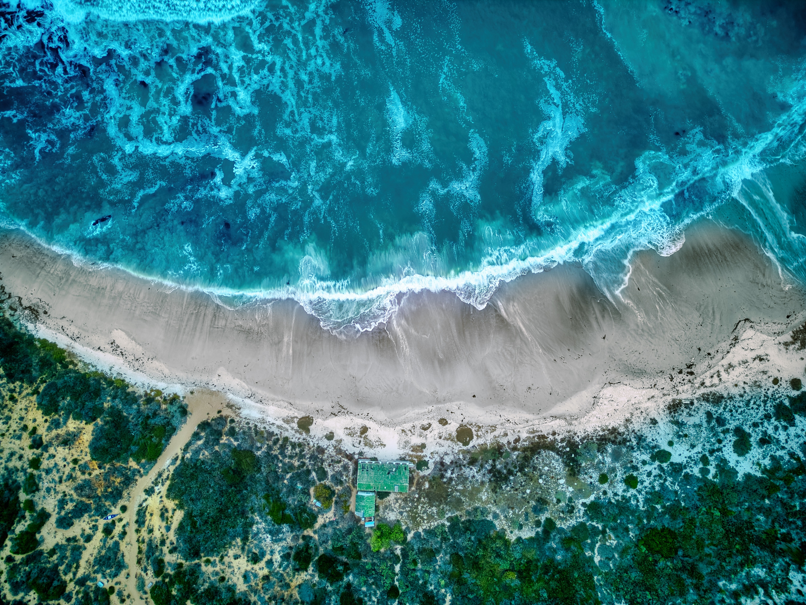
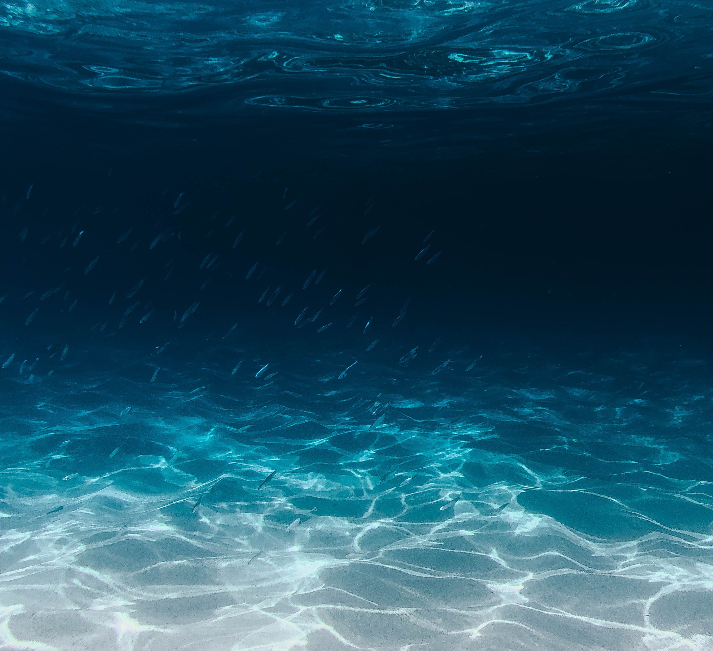
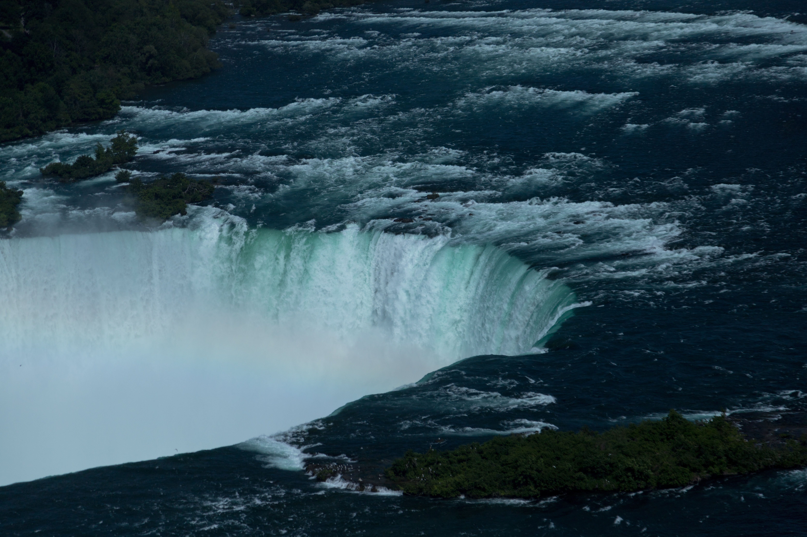
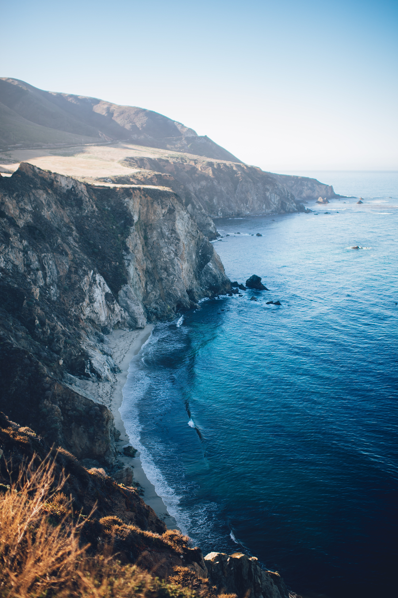
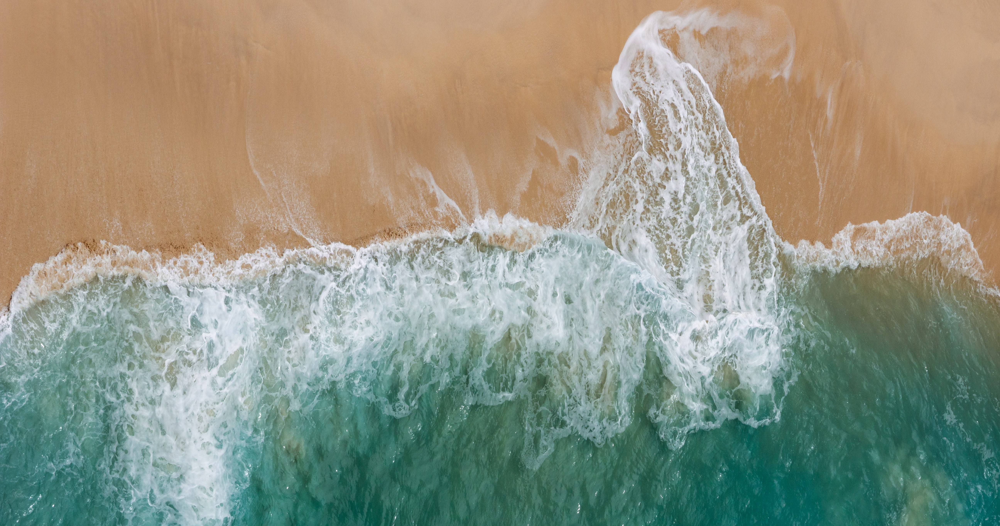

Температура воды в океане прошла "точку невозврата"

Новый анализ температуры поверхности океана за последние 150 лет показал, что в 2019 году на 57 процентах поверхности океана наблюдались температуры, считающиеся экстремальными по сравнению со средним историческим значением. Ученые также утверждают, что более половины поверхности океана регулярно превышало исторический порог экстремальной жары с 2014 года.
Для того чтобы определить частоту и продолжительность экстремальных явлений жары, морские экологи Кисей Танака из Национального управления океанических и атмосферных исследований в Гонолулу и Кайл Ван Хаутан из Центра морской флоры и фауны Loggerhead проанализировали ежемесячные показатели температуры поверхности моря с 1870 по 2019 год, составив карту, где и когда происходили экстремальные явления жары.
Затем ученые посмотрели, как часто и в насколько большой части океана наблюдались такие температуры.
подробней...
Опубликовала Iri Bronskaya
5.03.2023
На дне Тихого океана нашли загадочный "путь к Атлантиде"

На вершине подводной горы Нутка команда заметила образование "высохшего дна озера", которое сейчас идентифицируется как трещиноватый поток гиалокластита (вулканическая порода,
образующаяся при высокоэнергетических извержениях, когда многие фрагменты породы оседают на морское дно - прим.автора).
Исследователи отметили, что это похоже на дорогу из желтого кирпича, расположенную на вершине подводной горы недалеко от Гавайев. В шутку находку прозвали дорогой, ведущей к мифическому государству Атлантида.
подробней...
Опубликовала Iri Bronskaya
4.03.2023
Уровень кислотности Мирового океана достиг исторического максимума

Всемирная метеорологическая организация (ВМО) опубликовала ежегодный доклад "Состояние глобального климата", в котором говорится, что таяние ледяных щитов помогло поднять уровень моря до новых показателей в 2021 году.
Как отмечается, океаны принимают на себя большую часть основной тяжести потепления и выбросов. Водоемы поглощают около 90 процентов накопленного тепла Земли и 23 процента выбросов углекислого газа от человеческой деятельности.
подробней...
Опубликовала Iri Bronskaya
3.03.2023
Представлена самая точная карта Южного океана

Новый анализ температуры поверхности океана за последние 150 лет показал, что в 2019 году на 57 процентах поверхности океана наблюдались температуры, считающиеся экстремальными по сравнению со средним историческим значением. Ученые также утверждают, что более половины поверхности океана регулярно превышало исторический порог экстремальной жары с 2014 года.
Для того чтобы определить частоту и продолжительность экстремальных явлений жары, морские экологи Кисей Танака из Национального управления океанических и атмосферных исследований в Гонолулу и Кайл Ван Хаутан из Центра морской флоры и фауны Loggerhead проанализировали ежемесячные показатели температуры поверхности моря с 1870 по 2019 год, составив карту, где и когда происходили экстремальные явления жары.
Затем ученые посмотрели, как часто и в насколько большой части океана наблюдались такие температуры.
подробней...
Опубликовала Iri Bronskaya
2.03.2023
Извержение вулкана Тонга изменило форму морского дна Тихого океана

Новый анализ температуры поверхности океана за последние 150 лет показал, что в 2019 году на 57 процентах поверхности океана наблюдались температуры, считающиеся экстремальными по сравнению со средним историческим значением. Ученые также утверждают, что более половины поверхности океана регулярно превышало исторический порог экстремальной жары с 2014 года.
Для того чтобы определить частоту и продолжительность экстремальных явлений жары, морские экологи Кисей Танака из Национального управления океанических и атмосферных исследований в Гонолулу и Кайл Ван Хаутан из Центра морской флоры и фауны Loggerhead проанализировали ежемесячные показатели температуры поверхности моря с 1870 по 2019 год, составив карту, где и когда происходили экстремальные явления жары.
Затем ученые посмотрели, как часто и в насколько большой части океана наблюдались такие температуры.
подробней...
Опубликовала Iri Bronskaya
1.03.2023
В США официально признали существование пятого океана

Во Всемирный день океанов картографы National Geographic и Национальное географическое общество США признали существование пятого океана на Земле, называемого Южным. Начиная с 8 июня 2021 года организации начнут отмечать его на картах.
Хотя ученые давно использовали термин Южный океан для обозначения морей, окружающих Антарктиду, до сих пор не существовало международного соглашения, обозначающего границы пятого океана. Специалисты обсуждали, обладают ли воды Антарктики
уникальными характеристиками, позволяющими дать им свое название, или все же их правильнее отнести к южным областям Индийского, Атлантического и Тихого океанов.
подробней...
Опубликовала Iri Bronskaya
3.03.2023
Названы главные страны - источники мусора в Тихом океане

Специалисты проанализировали 573 килограмма сухого твердого пластикового мусора, который они собрали с помощью организации Ocean Cleanup в 2019 году, и обнаружили, что более четверти фрагментов мусора были из брошенных,
утерянных или иным образом выброшенных орудий лова, известных как ALDFG. В эту категорию входят такие вещи, как прокладки для устриц, ловушки для угрей, бирки для омаров и рыбы, а также пластиковые поплавки и буйки.
подробней...
Опубликовала Iri Bronskaya
3.03.2023